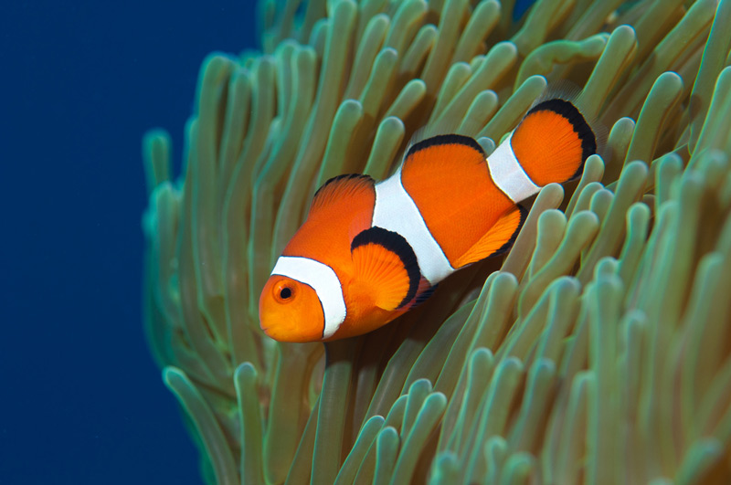

Рыба-клоун

Рыбы-клоуны — мелкие животные, их длина не превышает 15-20 см, самцы всегда мельче самок. Тело у них уплощенное с боков, спина высокая, голова короткая. Спинной плавник один, но он разделен выемкой на две части — переднюю, с колючими шипами и заднюю, мягкую, — отчего кажется будто спинных плавника два. Боковая линия (чувствительный орган, улавливающий колебания воды) у амфипронов тоже прерывается посередине. Отличительной особенностью этих рыб является большое количество слизи на поверхности кожи. Эта слизь защищает рыб-клоунов от смертоносных стрекательных клеток, которыми полны щупальца актиний. Окраска рыб-клоунов яркая, контрастная. Ареал рыб-клоунов простирается в тропических водах Индийского и Тихого океанов. Обитают они в зарослях коралловых рифов, причем всегда находятся в непосредственной близости от актинии (на расстоянии не более десятка сантиметров). В этой связи амфиприоны не мигрируют на большие расстояния. Среди рыб-клоунов есть тесно связанные только с одним определенным видом актиний, а есть и такие, которые встречаются на нескольких разных видах актиний. Амфиприоны живут парами или небольшими группами, в которых царит строгая иерархия. Самая крупная рыба в группе (это всегда самка) прогоняет самых мелких сородичей, к более крупным самцам она относится терпимо. Для своих размеров амфиприоны смелые рыбки, которые защищают свой дом — актинию от незваных пришельцев. Так зачем же нужны рыбам-клоунам актинии? Для защиты. Покрытая слизью кожа рыб-клоунов защищает их от смертельных прикосновений щупалец актинии, но ведь другие рыбы такой защиты не имеют. Прячась среди щупалец актиний рыба-клоун избегает назойливого внимания хищников.